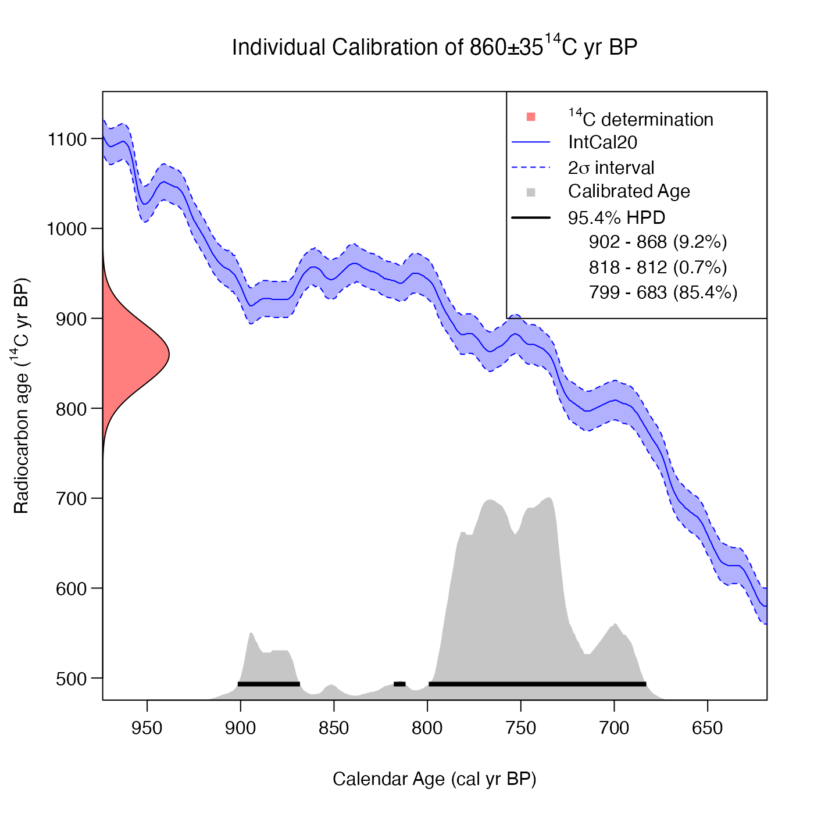
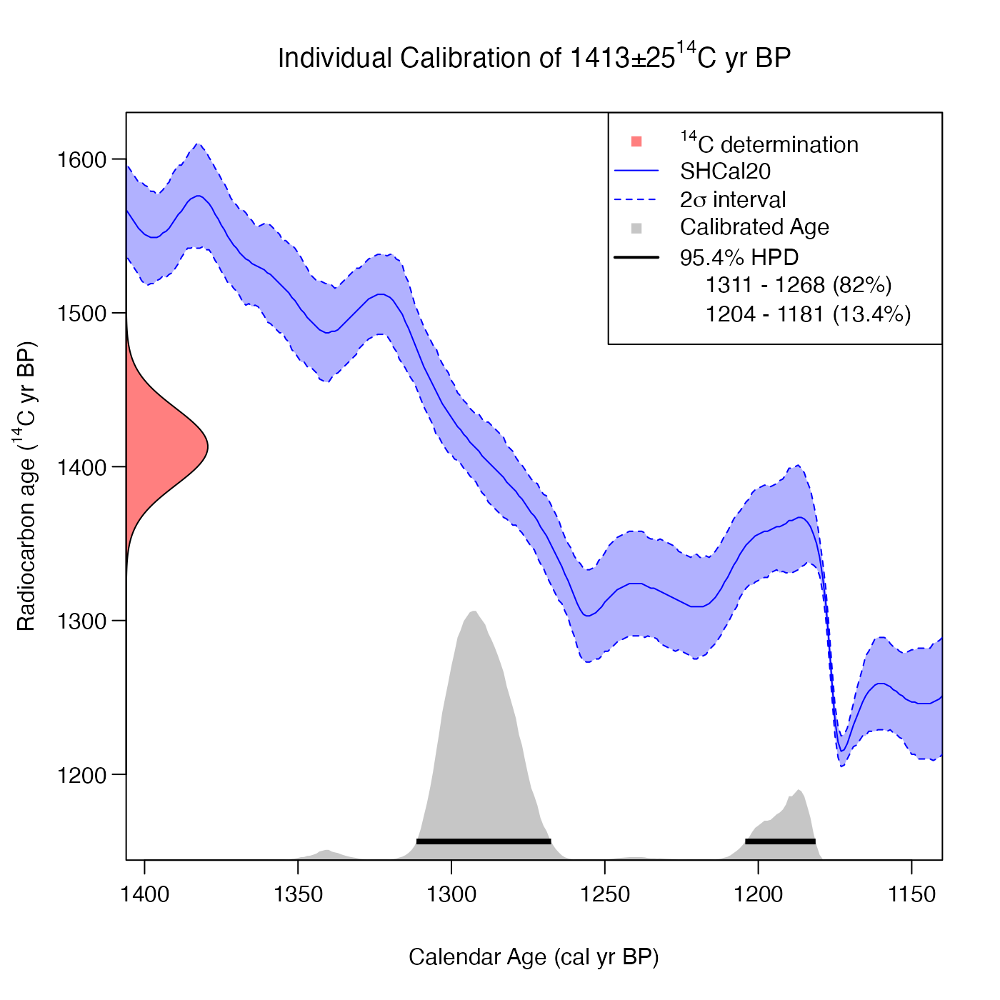
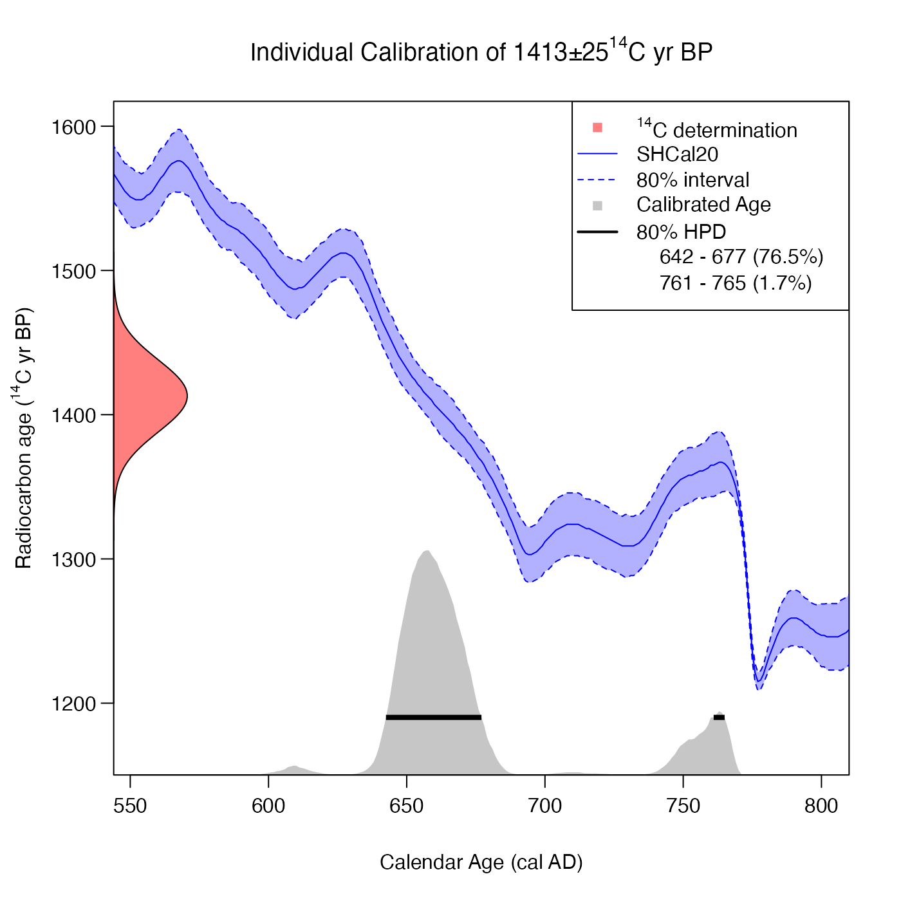
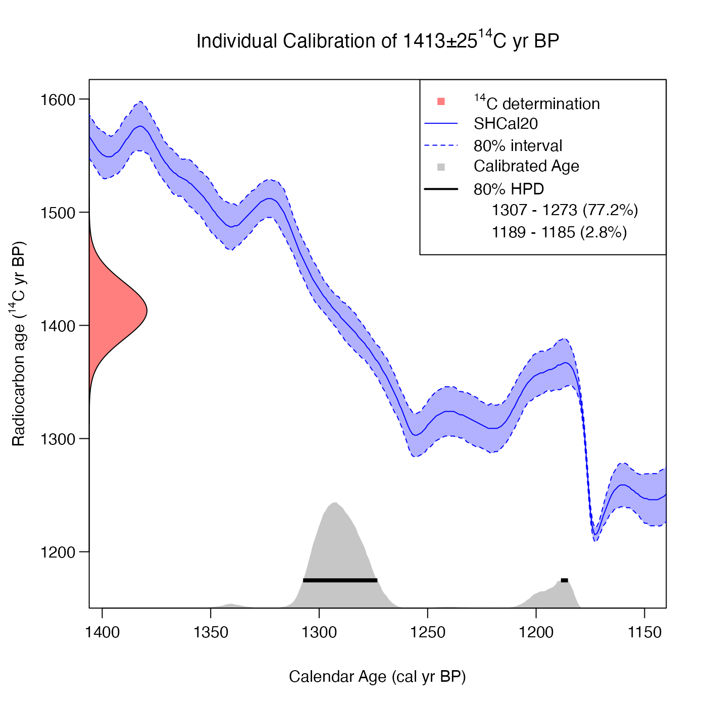

Calibrate a Single Radiocarbon Determination
Source:R/CalibrateSingleDetermination.R
CalibrateSingleDetermination.RdUses the supplied calibration curve to calibrate a single radiocarbon determination and uncertainty (expressed either in terms of radiocarbon age, or as an F\({}^{14}\)C concentration) and obtain its calendar age probability density estimate.
Usage
CalibrateSingleDetermination(
rc_determination,
rc_sigma,
calibration_curve,
F14C_inputs = FALSE,
resolution = 1,
plot_output = FALSE,
plot_cal_age_scale = "BP",
interval_width = "2sigma",
bespoke_probability = NA,
denscale = 3
)Arguments
- rc_determination
A single observed radiocarbon determination provided either as the radiocarbon age (in \({}^{14}\)C yr BP) or the F\({}^{14}\)C concentration.
- rc_sigma
The corresponding measurement uncertainty of the radiocarbon determination (must be in the same units as above, i.e., reported as \({}^{14}\)C age or F\({}^{14}\)C)
- calibration_curve
A dataframe which must contain one column
calendar_age_BP, and also columnsc14_ageandc14_sigorf14candf14c_sig(or both sets). This format matches the curves supplied with this package, e.g., intcal20, intcal13, which contain all 5 columns.- F14C_inputs
TRUEif the providedrc_determinationis an F\({}^{14}\)C concentration andFALSEif it is a radiocarbon age. Defaults toFALSE.- resolution
The distance between the calendar ages at which to calculate the calendar age probability. Default is 1.
- plot_output
TRUEif you wish to plot the determination, the calibration curve, and the posterior calibrated age estimate on the same plot. Defaults toFALSE- plot_cal_age_scale
Only for usage when
plot_output = TRUE. The calendar scale to use for the x-axis. Allowed values are "BP", "AD" and "BC". The default is "BP", corresponding to plotting in cal yr BP.- interval_width
Only for usage when
plot_output = TRUE. The confidence intervals to show for the calibration curve and for the highest posterior density ranges. Choose from one of "1sigma" (68.3%), "2sigma" (95.4%) and "bespoke". Default is "2sigma".- bespoke_probability
The probability to use for the confidence interval if "bespoke" is chosen above. E.g. if 0.95 is chosen, then the 95% confidence interval is calculated. Ignored if "bespoke" is not chosen.
- denscale
Whether to scale the vertical range of the calendar age density plot relative to the calibration curve plot (optional). Default is 3 which means that the maximum calendar age density will be at 1/3 of the height of the plot.
Value
A data frame with one column calendar_age_BP containing the calendar
ages, and the other column probability containing the probability at that
calendar age.
Examples
# Calibration of a single determination expressed as 14C age BP
calib <- CalibrateSingleDetermination(860, 35, intcal20)
plot(calib, type = "l", xlim = c(1000, 600))
# Incorporating an automated plot to visualise the calibration
CalibrateSingleDetermination(860, 35, intcal20, plot_output = TRUE)

# Calibration of a single (old) determination expressed as 14C age BP
calib <- CalibrateSingleDetermination(31020, 100, intcal20)
plot(calib, type = "l", xlim = c(36500, 34500))
# Calibration of a single (old) determination expressed as F14C concentration
calib <- CalibrateSingleDetermination(
0.02103493, 0.0002618564, intcal20, F14C_inputs = TRUE)
plot(calib, type = "l", xlim = c(36500, 34500))
# Calibration of a single determination expressed as 14C age BP
# against SHCal20 (and creating an automated plot)
CalibrateSingleDetermination(1413, 25, shcal20, plot_output = TRUE)

# Implementing a bespoke confidence interval level and plot in AD
CalibrateSingleDetermination(
1413,
25,
shcal20,
plot_output = TRUE,
plot_cal_age_scale = "AD",
interval_width = "bespoke",
bespoke_probability = 0.8)

# Changing denscale (so the calendar age density takes up less space)
CalibrateSingleDetermination(
1413,
25,
shcal20,
plot_output = TRUE,
interval_width = "bespoke",
bespoke_probability = 0.8,
denscale = 5)
